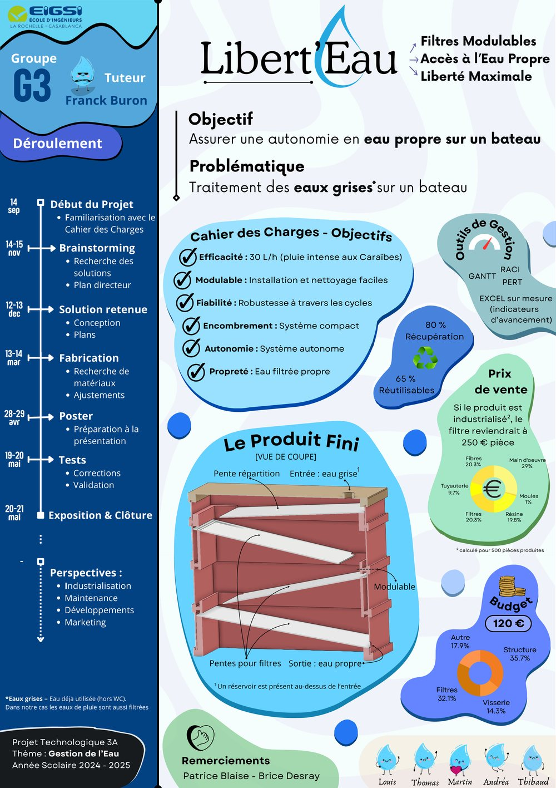
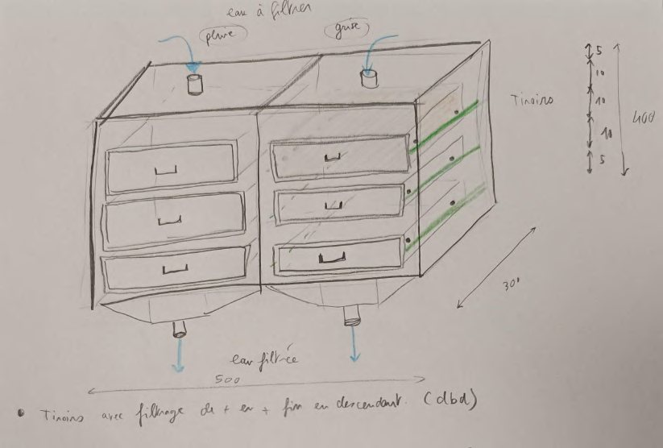
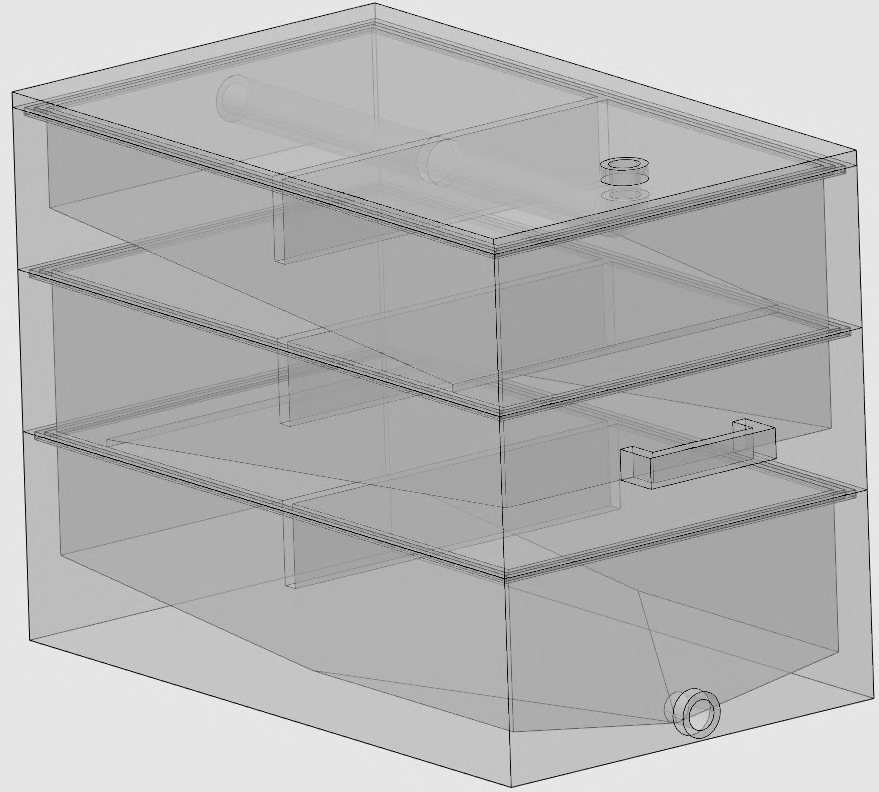
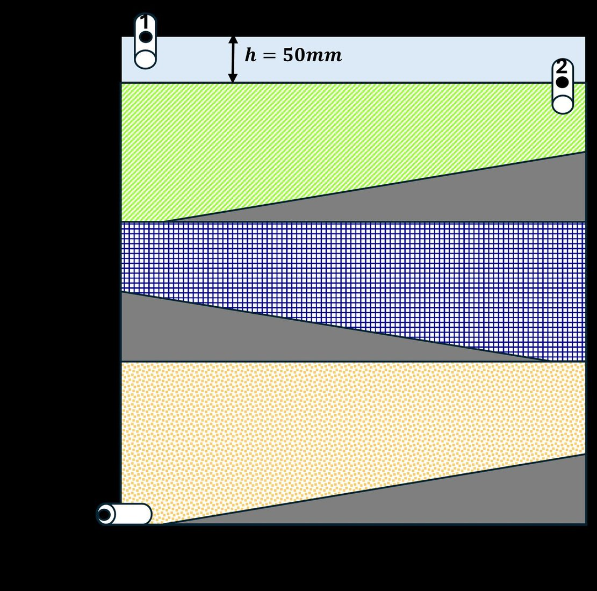
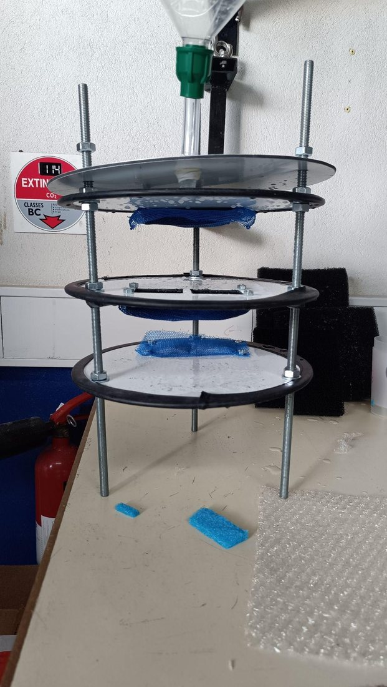
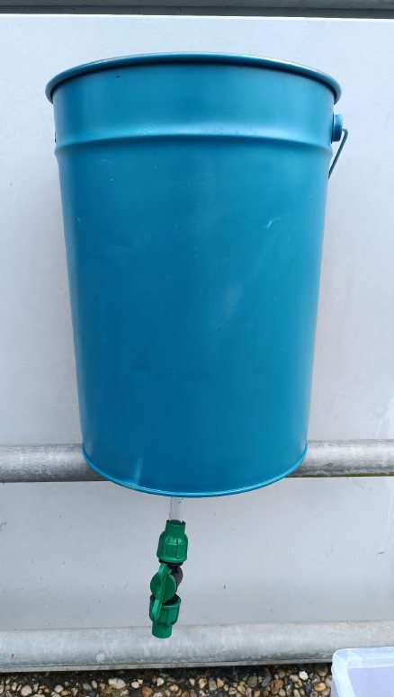

01Contexte
En mer, l'eau douce est une ressource limitée. Le projet visait à récupérer l'eau de pluie et à réutiliser les eaux grises (douche, évier) d'un voilier pour les tâches qui n'ont pas besoin d'eau potable : vaisselle, ménage, douche. Le système complet a été étudié, et l'élément clé, le filtre, a été conçu et prototypé.
- Objectif : au moins 30 L d'eau filtrée par heure de pluie.
- Budget du prototype : 120 €, avec un maximum de matériaux de récupération.
- Contraintes : système compact, modulable, facile à entretenir et durable en milieu marin.

02Mon rôle
- Chef de projet : plan directeur, planning, suivi des jalons et des risques, lien avec le tuteur.
- Outil de gestion sous Excel/VBA : tableau de bord, Gantt mis à jour selon les aléas, matrices RACI, suivi des dépenses et des retards.
- Conception de la partie récupération de l'eau de pluie, en sous-groupe.
03Conception
Après l'analyse fonctionnelle (bête à cornes, pieuvre, tri croisé) et plusieurs brainstormings, nous avons retenu un filtre gravitaire à plusieurs étages. Les étages s'empilent et sont montés sur un tiroir, ce qui permet de sortir tout le bloc pour l'entretien.
La filtration se fait en trois étapes : une mousse filtrante pour les gros débris, une mousse au charbon actif pour les odeurs et certains polluants, puis une résine échangeuse d'ions. Une note de calcul sur les pertes de charge des filtres a permis de vérifier le débit en sortie.




04Prototype
La structure devait être imprimée en 3D, mais les essais ont échoué : le matériau étanche n'adhérait pas au plateau. Déjà en retard sur le planning, nous avons construit une solution de secours à partir de matériaux de récupération (seau, plaque de Dibond, tiges filetées, chambres à air). Nous avons aussi obtenu gratuitement la résine échangeuse d'ions auprès d'un fabricant, ce qui a soulagé le budget.


05Résultats
- Le prototype et sa documentation (rapport, notice utilisateur, poster) ont été livrés dans les délais et sous le budget.
- Les tests montrent un bon écoulement et l'élimination des grosses particules. En revanche, les particules fines et les résidus de savon ne sont pas retenus, il faudrait un étage de filtration plus fin.
- Nous avons aussi mené une étude d'industrialisation : moulage composite en deux gammes (économique et biosourcée), chiffrée pour 500 unités, soit environ 250 € la pièce (estimation : le filtre n'a pas été industrialisé).